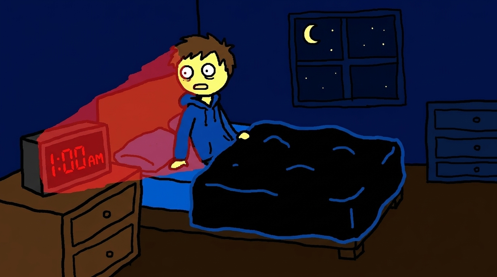
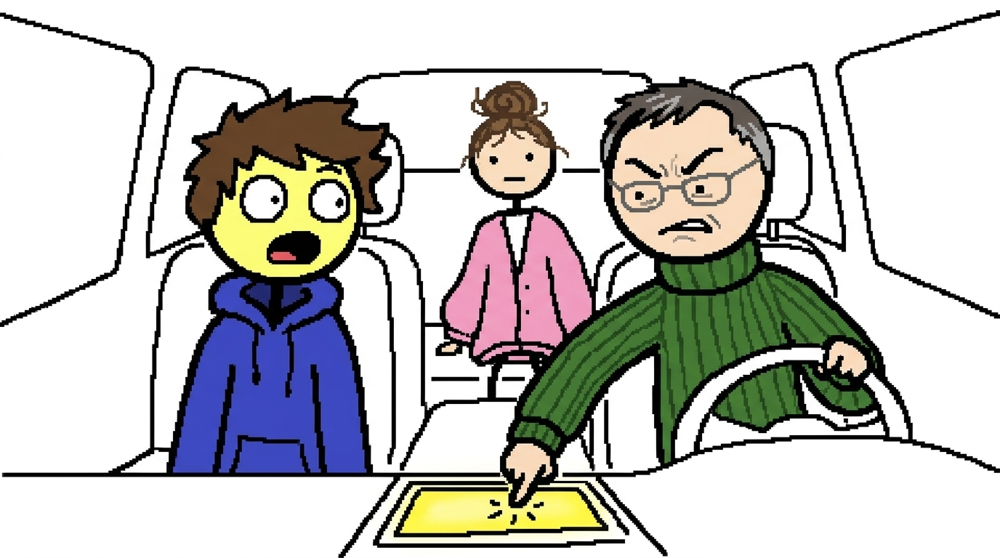
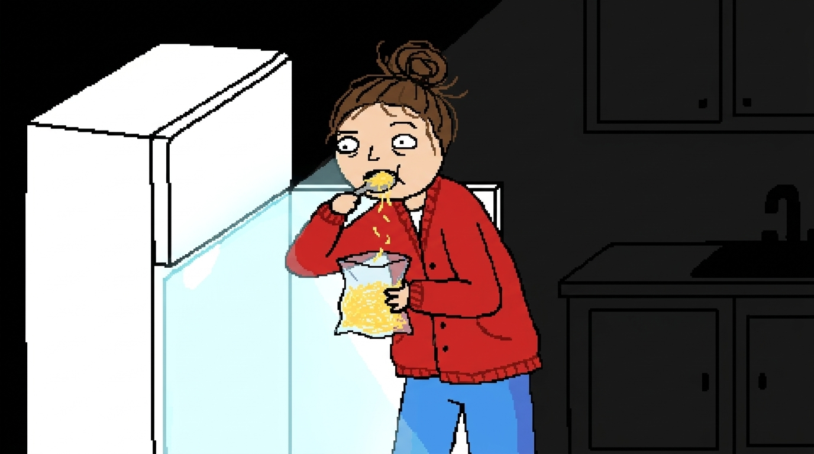

An idea, brought to life.
Your idea.
A video you can
make your own.
Start with an idea or a script. Get a narrated video,
then change the scenes until it feels like yours.
Explore a prepared example. No account needed.



Built around the correction
From a few words
to your finished story.
Start with an idea or script. Inspect the generated scenes.
Correct a line or image, then render your video.
Explore the scene workspace →